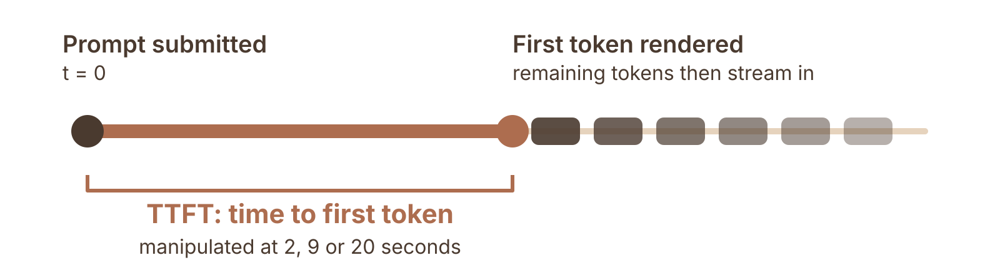
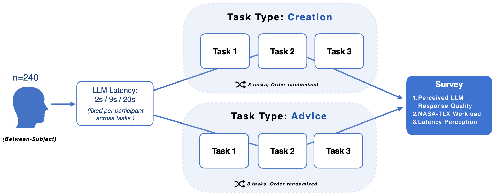

ACM CHI 2026
The Impact of Response Latency and Task Type on Human-LLM Interaction and Perception
1New York University, Tandon School of Engineering 2Augmented Human Lab, National University of Singapore
In the press: Washington Square News · Earth.com · NYU Tandon
User interaction behaviors were robust to latency, yet varied by task type: Creation tasks elicited more frequent prompting than Advice tasks. In contrast, participants who experienced 2-second latencies rated the LLM's outputs less thoughtful and useful than those who experienced 9- or 20-second latencies. Latency is not simply a cost to reduce but a tunable design variable with ethical implications.
Why it matters
Responsiveness in large language model (LLM) applications is widely assumed to be critical, yet the impact of latency on user behavior and perception of output quality has not been systematically explored. Unlike the deterministic, transactional systems typically studied in System Response Time (SRT) research, outputs are probabilistic and unpredictable, and interaction takes conversational form.

assets/projects/response-latency/ttft.svgTimeline of the manipulated variable, TTFT.
What the paper did
- Interface. A custom GPT-4o interface in which time-to-first-token latency was set to 2, 9 or 20 seconds.
- Design. A 3 (Latency) × 2 (Task Type) between-subjects experiment. Creation tasks involve producing new content (e.g., writing, brainstorming, drafting). Advice tasks involve providing guidance, critique or evaluation.
- Measures. Interaction logs, post-task ratings of the perceived quality of the LLM's responses, and open-ended responses about the delays.

assets/projects/response-latency/fig1-design.pngPaper Fig. 1: the study design, six groups from two task types and three latency levels.
The paper also contributes a reusable experimental platform for studying timing effects in human-LLM interaction, comprising an end-to-end LLM interaction system with latency control and interaction logging (code on GitHub), and the study's anonymized dataset (OSF).
What the paper found
“I had longer to contemplate what my next query would be.”
Design implications
- Instantaneous output need not be the priority. The shortest onset delay (2 s) was consistently rated less thoughtful and less useful than slower responses, which suggests that faster replies can undercut perceptions of depth.
- Mid-length pauses can be leveraged strategically. Moderate waits (≈9 s) were occasionally reframed by participants as useful, with some reporting they used the time to re-read instructions or plan next steps. Latency can be repurposed as a resource.
- Mitigate the costs of long delays. Even at 20 s, latency did not substantially alter prompting behavior, though a subset of participants reported concerns about system reliability.
- Calibrate latency to task orientation. Creation tasks elicited more prompting than Advice tasks, so latency design should be task-aware rather than uniform.
- Be transparent when timing is intentionally shaped. Without transparency, users may conflate interactional pacing with signals of epistemic depth, leading to distorted trust calibration.
Cite
@inproceedings{tan2026latency,
title = {The Impact of Response Latency and Task Type on Human-LLM Interaction and Perception},
author = {Tan, Felicia Fang-Yi and Messerschmidt, Moritz Alexander and Yin, Wen and Nov, Oded},
booktitle = {Proceedings of the 2026 CHI Conference on Human Factors in Computing Systems},
series = {CHI '26},
year = {2026},
publisher = {ACM},
doi = {10.1145/3772318.3790716}
}